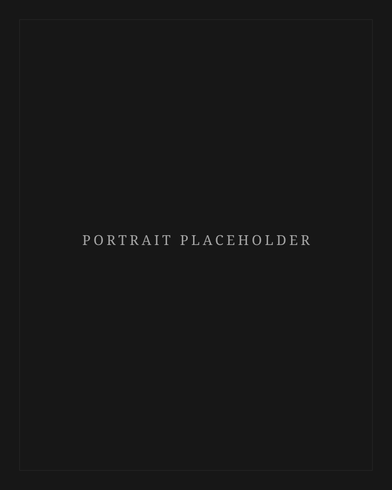

Beyond Work. Beyond Boundaries.
Alex
Zhang
Exploring ideas, building experiences, and documenting the journey along the way. An evolving perspective on work, life, creativity, and the world.

"Beyond Work. Beyond Boundaries."